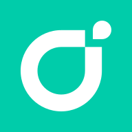
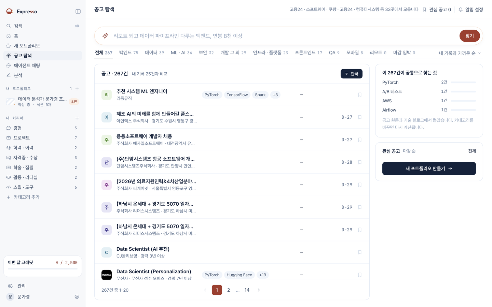
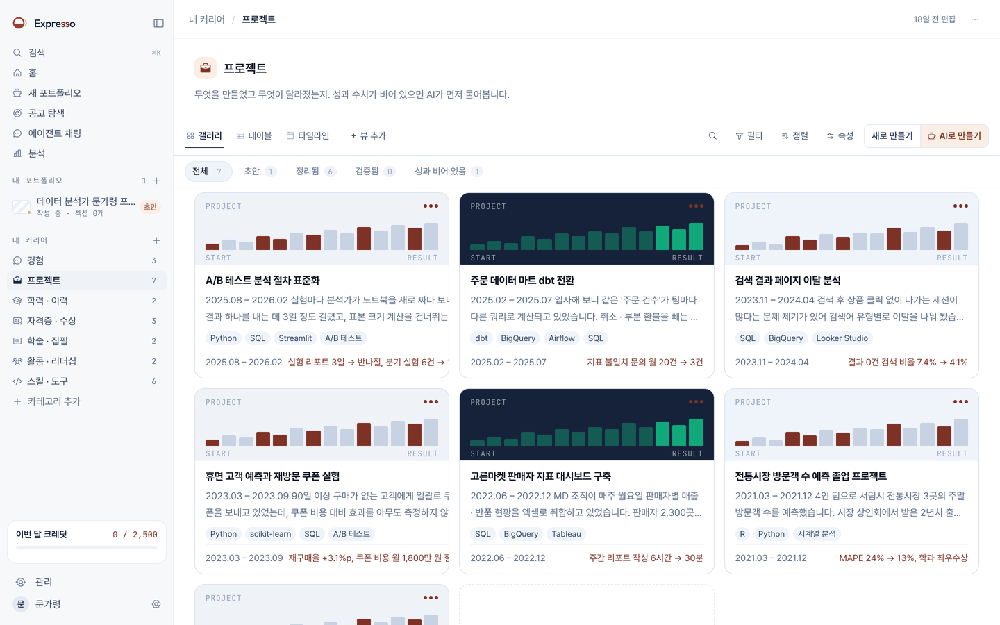
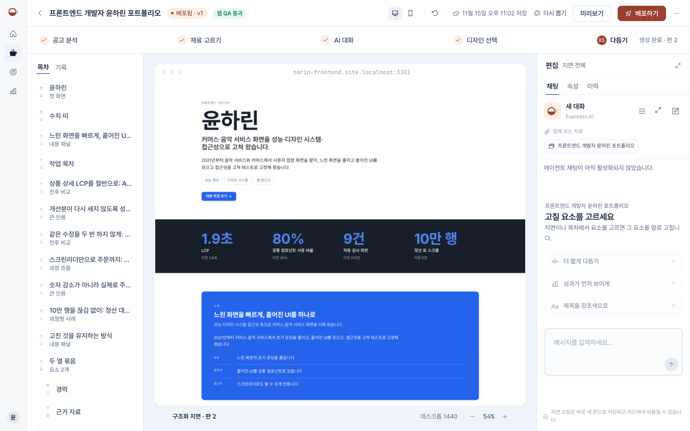

구직 목표 파악
대화로 희망 직무와 근무지,
취업 시기를 묻고 저장합니다.
취업 시기를 묻고 저장합니다.
지원하는 회사마다 반복되는 포트폴리오 제작
커리어 기록과 채용 공고에서 맞춤 포트폴리오까지
사용자 흐름 단계별 지원 범위

랠릿정해진 테마의 프로필 · 링크 공유커리어 기록에서 방문 분석까지의 사용자 흐름
문장으로 찾고, 일치도와 요건별 근거로 고르는 채용 공고
기술 스택 · 외부 서비스 · AI 모델
기능별 처리 모델 구분
외부 LLM 판정을 대신하는 자체 순위 모델
E5 인코더 위의 경력 근거 헤드와 채용 공고 순위 결합 모델
교사 LLM 판정으로 만든 적합도 라벨과 요건별 근거
한국어 평가 · 프로필 40명 × 채용 공고 32건 · 1,280쌍 전부 채점
서비스 흐름 순서의 담당 도메인
사전 계획의 마일스톤과 실제 수행한 버전
11-14 · 설계서 열 단계의 운영 환경 동작
GUI 기반 포털식 플랫폼 · 서로 이어지지 않는 세 기능



분절된 기능의 채팅 기반 단일 인터페이스 통합
Expresso Agent의 도움으로 만든 구조
11-17 ~ 11-22 · 버전별 Expresso Agent의 역할 확대
에이전트 기반 개발(Agentic-Driven Development)에 맞는 협업 방법 탐색
서비스 · 데이터셋 · AI 모델 · 문서
사용자 편의 · 추천 품질 · 커리어 성장